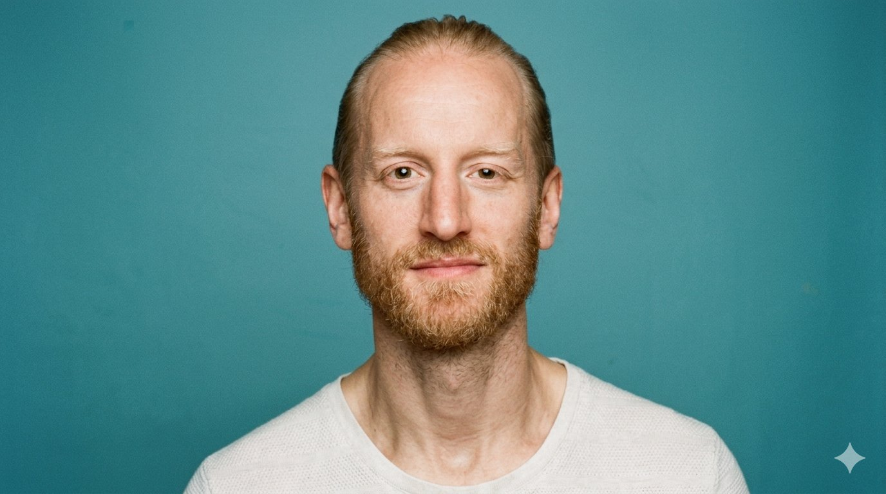
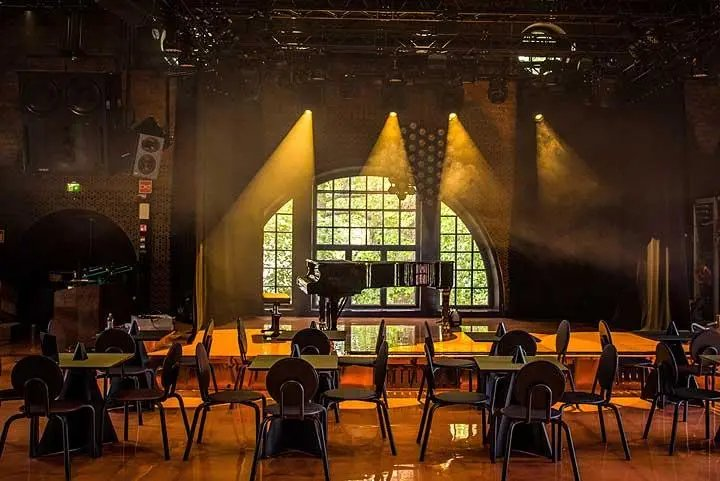
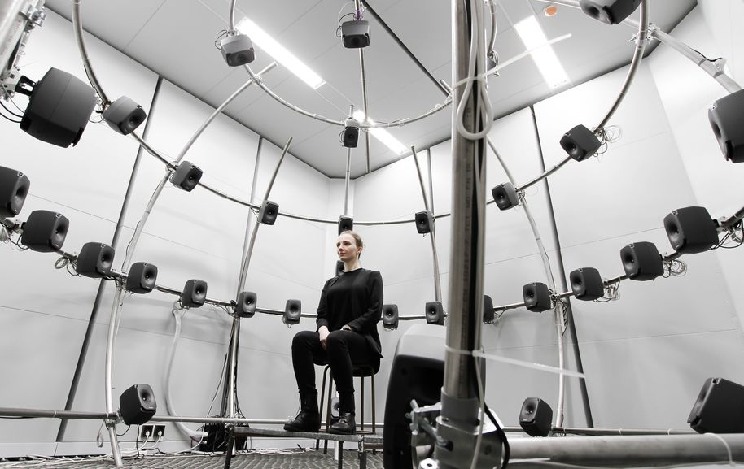
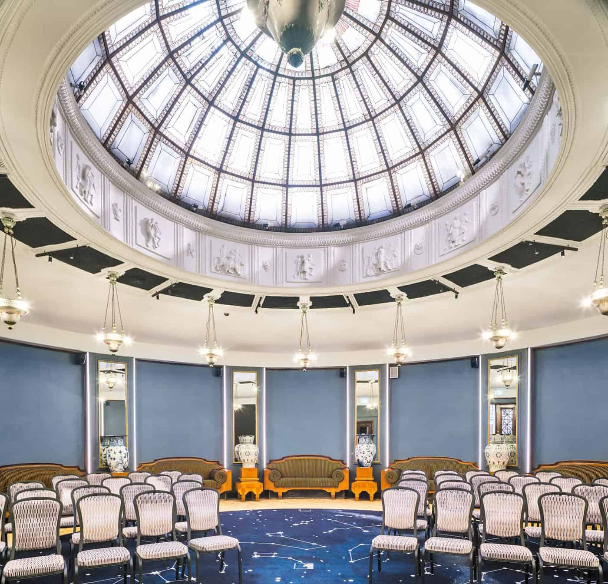

Acoustics · Systems · Engineering
Acoustic systems engineer building tools, models, and real-world deployments.
From 64-channel reverberation systems in live venues to bio-based acoustic materials, my work focuses on what happens when controlled models meet messy physical reality.

Case Study · Deployed System
A deployed multi-channel reverberation system developed through research at Aalto Acoustics Lab and implemented in live music venues across Finland. The project focused on a recurring problem in acoustic engineering: how to move spatial audio research beyond controlled laboratory conditions into systems that remain stable, usable, and reliable during real performances.

G Livelab Helsinki
Multi-channel speaker array · Aalto Acoustics LabThe Challenge
G Livelab hosts amplified concerts, acoustic performances, and immersive productions in spaces not originally designed around a single acoustic identity.
The difficulty was not simply generating reverberation, but operating a large-scale reinforcement system under live conditions with open microphones, changing stage configurations, strict latency constraints, and engineers whose attention needed to remain on the performance rather than on DSP infrastructure.
The system had to integrate into an existing venue workflow and remain manageable during concerts without requiring specialist knowledge in spatial acoustics or feedback control.
My Role
My work focused on the implementation and deployment of the reverberation system architecture, including real-time DSP integration, feedback mitigation, computational optimisation, and system tuning in the venue environment.
This included translating a research prototype into a stable operational system that could function reliably in everyday concert use while remaining practical for venue engineers to operate.
The System
The reverberation engine is based on a 64-channel Feedback Delay Network using frequency-domain matrix operations to reduce computational cost at high channel counts.
To reduce the risk of acoustic feedback in live conditions, the system employs a time-varying feedback matrix while preserving spatial coherence and perceptual stability.
The architecture was designed around practical deployment constraints: low-latency operation, reliable real-time behaviour, scalable routing, and a control structure that could be used confidently during live events.
From Research to Deployment
Many acoustic systems function well as laboratory prototypes but become difficult to maintain once exposed to the realities of deployment: hardware limitations, unstable feedback behaviour, computational limits, changing room conditions, and operator workflow under pressure.
This project required bridging research in artificial reverberation and spatial acoustics with the practical constraints of live venue operation. The system is now in regular use at G Livelab venues for acoustic and immersive performances, serving as an ongoing demonstration of multi-channel reverberation research in a real-world environment.
Published & Submitted Research
The Role of Modal Excitation in Colorless Reverberation
🏆 3rd Best Paper Award · DAFx 2021Reverberation Enhancement System Design and Operation: A Case Study
* Equal contribution · Under Review · JAES 2026Consulting & Tools
I develop browser-based tools, modelling workflows, and reporting systems that translate acoustic analysis into practical decisions. The focus is not only modelling accuracy, but usability: tools that help acoustic analysis function outside specialist research workflows and support real design, engineering, and material decisions.
The throughline across all of it: reducing the distance between technical knowledge and actionable decisions.
Areas of Work
Many acoustic workflows remain fragmented across scripts, spreadsheets, proprietary software, and specialist knowledge that is difficult to communicate outside a research environment. These tools were developed to reduce that fragmentation and create more direct interaction between modelling, measurement, and operational use.
A browser-based reporting tool that translates acoustic characterisation data into structured, procurement-ready documentation for material evaluation and comparison.
The tool combines JCAL parameters, absorption measurements, specimen metadata, and sustainability metrics into a standardised format intended to support communication between researchers, manufacturers, and specifiers in the material evaluation process.
Open tool →An interactive tool for exploring how porous material parameters influence predicted absorption behaviour across layered structures and orientations.
Originally developed as part of my own research workflow to make the relationships between transport parameters, layer geometry, and acoustic response more directly interpretable during material development. Rather than replacing analytical models, the interface functions as an intuition-building layer on top of them.
OperationalA browser-based frequency response tool for resonator acoustics applied to microphone inlet and acoustic cavity design. Built on a lumped-element model with end-correction logic.
Designed to make resonator tuning accessible at the design stage, where iteration between geometry and acoustic behaviour needs to happen before physical prototyping begins.
Operational · v1.4A research prototype exploring whether JCAL transport parameters can be estimated from impulse response measurements using a neural surrogate model.
The forward model phase is complete. The long-term goal is to make material characterisation possible in field and industrial settings where impedance tube measurements are impractical or unavailable.
Research prototypeAn end-to-end Python pipeline connecting impedance tube measurement data to JCAL parameter fitting, transfer-matrix prediction, and publication-ready figure generation.
Developed for reproducibility across collaborating research groups and validated against analytical models and measurement workflows. Structured to support the full chain from raw specimen data to modelled acoustic performance.
Production workflowBespoke browser-based interfaces for acoustic measurement reporting, performance visualisation, and technical communication to non-specialist audiences.
Built for contexts where the primary challenge is not computation but interpretation: making acoustic outputs legible to architects, procurement teams, or clients who need to act on technical data they did not generate themselves.
On requestCase Study · PhD Research
PhD Research · Acoustic Modelling and Characterisation · Aalto University
Bio-based acoustic materials are often treated as too variable and unpredictable for reliable modelling and deployment. My research focuses on how existing acoustic modelling frameworks fail when applied to structurally irregular bio-based materials.
The work centres on foam-formed plant fibre absorbers whose internal density gradients and directional structures challenge assumptions embedded in conventional porous acoustic models. The framework used to evaluate these materials was not built for them.
My work combines acoustic characterisation, JCAL modelling, transfer matrix prediction, and analysis of orientation-dependent behaviour in foam-formed porous structures.
Research Focus
The research combines acoustic characterisation, physical modelling, and material synthesis across collaborations between Aalto Acoustics Lab, Aalto Chemistry Department, and Lumir Oy.

Real Deployment · Lumir Oy
Lumir's foam-formed bio-based material is sprayed directly onto existing structures in heritage spaces, conforming to complex geometries without altering the visual character of the architecture.
This is the deployment challenge that laboratory characterisation must ultimately serve: a material that performs acoustically, installs without disruption, and remains invisible once in place.
The collaboration between Aalto Acoustics Lab and Lumir Oy creates a direct feedback loop between material synthesis, acoustic characterisation, and real-world installation, shortening the distance between a measurement in an impedance tube and a decision on a building site.
Published Research
Orientation-Dependent Acoustic Behaviour of Foam-Formed Reed and Lupine Fibre Absorbers: Limitations of Homogeneous Porous Modelling
Conference · Peer ReviewedCharacterization, Modelling and Prediction of Bio-based Foam-Formed Fibres for Sound Absorption
ConferenceModelling of Hierarchical Pore Structures in Freeze-Dried Pectin Cryogels
ConferenceArtistic Practice
Over the past decade I have worked across breakdance, contemporary dance, theatre, and interdisciplinary performance in Germany and Finland, including stage performance, sound design, teaching, and artistic collaboration.
Currently developing lecture performances that combine movement, spoken text, live music, and scientific content. The work explores ecological and biological systems through embodied experience rather than representation.
A lecture performance exploring the idea of organisms as interconnected living systems composed of host and microbial life. Combining dance, spoken text, live music, and scientific narration, the work examines how ecological and biological interdependence shapes human behaviour and perception.
Performed and touring.
A dance-theatre piece set in a forest environment. Janis performed and created the sound design, building a spatial soundscape drawn from the mycorrhizal networks that connect trees beneath the soil.
A lecture performance in development combining plant biology, embodiment theory, and personal narrative.
Performance History
Stage career spanning breakdance competition at world level, contemporary dance, and theatre with companies including Goethe Theater Bremen, Schauspielhaus Bochum, Tanzhaus NRW, and Renegade. Teaching and artistic direction at PACT Zollverein, Folkwang Universität, and Grillo Theater Essen.
Full production history and artistic CV available on request.
Contact
Currently completing PhD research at Aalto University with a focus on acoustic modelling, characterisation, and deployable technical systems.
Interested in Application Engineering, applied R&D, and technical product environments where modelling, measurement, and operational usability intersect. Also available for acoustic consulting, technical tooling, and interdisciplinary collaborations.